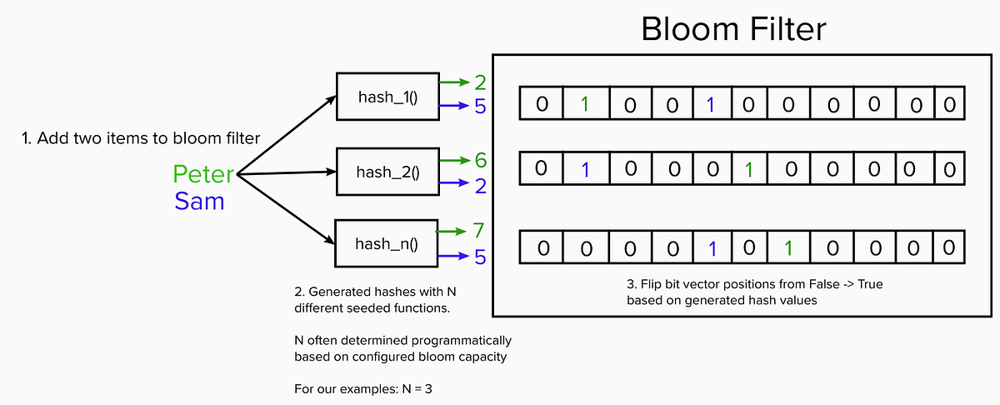
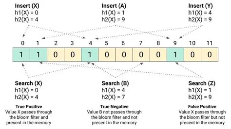

System Design Mastery
Master scalable systems with premium insights
✨ Bloom Filter: Memory-Efficient Existence Testing
1️⃣ What is it?
A Bloom Filter is a fast, memory-efficient data structure used to check if an element is present in a set. It can answer one key question:
Key characteristic:
- ✅ Definitely NOT present — Always correct
- 🤔 May be present — Might have false positives
- ❌ Never says "Definitely present" — Can't guarantee 100% certainty
A Bloom filter trades accuracy for speed and memory efficiency. It uses a bit array and multiple hash functions to achieve O(1) lookup time while consuming minimal memory.
2️⃣ Why Does It Exist? (What Problem Does It Solve?)
In large systems, checking a database for existence is expensive and slow. Bloom filters exist to avoid these unnecessary database hits.
The Problem:
- 🗄️ Databases are huge and storing on disk
- ⏱️ Checking DB every time is expensive
- 📈 Many requests are for data that doesn't exist
👉 Bloom filter avoids unnecessary DB hits.
3️⃣ What Breaks Without It?
Without Bloom Filter, the system becomes slow and inefficient:
- ❌ Every lookup hits database
- ⚠️ DB overload under high traffic
- 🐢 Slow response time
📌 Example: Checking if a username exists → millions of unnecessary DB calls ❌
4️⃣ When to Use / Not Use
✅ When to Use Bloom Filters:
- 🗃️ Huge datasets
- 💾 Memory is limited
- ⚡ Speed is critical
- 📊 Small error rate is acceptable
- 🗄️ Prevent DB hits
Examples: Checking if user exists, email validation, URL blacklisting
❌ When NOT to Use:
- 💳 Exact accuracy is required
- 💰 Financial transactions
- 🔒 Systems where false positives are unacceptable
📌 Remember: Bloom Filters allow false positives (saying "maybe" when it's actually "no")
5️⃣ Real App Connection
🛒 E-commerce
Before checking DB: Check Bloom Filter for product existence. If NOT present → skip DB call (save resources!)
📱 WhatsApp / Instagram
Imagine: User searches for a username. Most usernames don't exist.
Without Bloom filter: Every search → DB query ❌ (expensive)
With Bloom filter:
- Check Bloom filter first
- Says ❌ Not present → skip DB
- Says ✅ Maybe present → check DB
👉 Saves CPU + reduces load ⚡
🧠 How It Works (Simple Explanation)
Step 1: Setup
- Create a bit array (all zeros)
- Use multiple hash functions (e.g., 3 hash functions)
Step 2: Adding Element
- Hash the element using all hash functions
- Set those bit positions to 1
Step 3: Searching Element
- Hash the element again using same hash functions
- If any bit = 0: definitely NOT present ❌
- If all bits = 1: possibly present ✅

📊 Bloom Filter Diagram
📊 Decision Matrix: 4 Cases
| Reality | System Says | Name |
|---|---|---|
| It exists | YES | ✅ True Positive |
| It exists | NO | ❌ False Negative |
| It doesn't exist | NO | ✅ True Negative |
| It doesn't exist | YES | ❌ False Positive |
⚠️ Understanding False Positives
False Positive (FP)
- 👉 Item does NOT exist in database
- 👉 System says YES
Example: Bloom filter says "maybe present" but actually it's not in database. This is a wrong decision ❌
Why Bloom Filter Has False Positives?
Because multiple items may hash to the same bit positions:
- Overlap in bits
- Bits look like item exists
- But actually another item set those bits
👉 That creates false positive

📊 Bloom Filter Diagram
Practical Example with 3 Hash Functions
If you check element 21 with 3 hash functions, it maps to 3 bit positions. Decision rule:
- 👉 If ALL 3 bits are 1 → "Maybe present"
- 👉 If ANY one bit is 0 → "Definitely NOT present"
| Bits | Result | Meaning |
|---|---|---|
| (1,1,1) | Maybe present | Could be true positive or false positive |
| (1,0,0) | Definitely not present | Always correct |
| (0,1,1) | Definitely not present | Always correct |
🎯 Summary
A Bloom Filter is a memory-efficient probabilistic data structure used to test whether an element is possibly in a set, helping reduce unnecessary database lookups. It trades accuracy for speed and space, making it perfect for large-scale systems where a small error rate is acceptable.